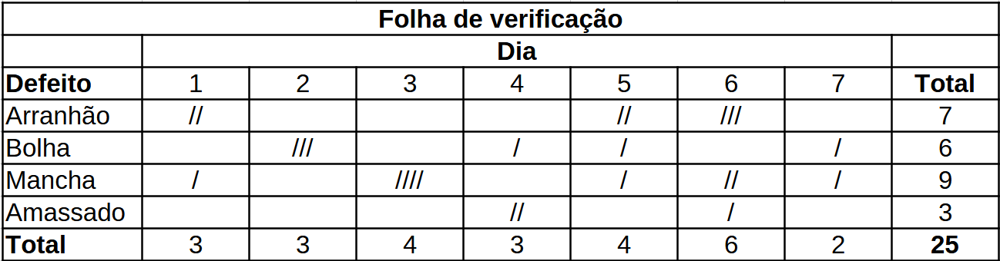
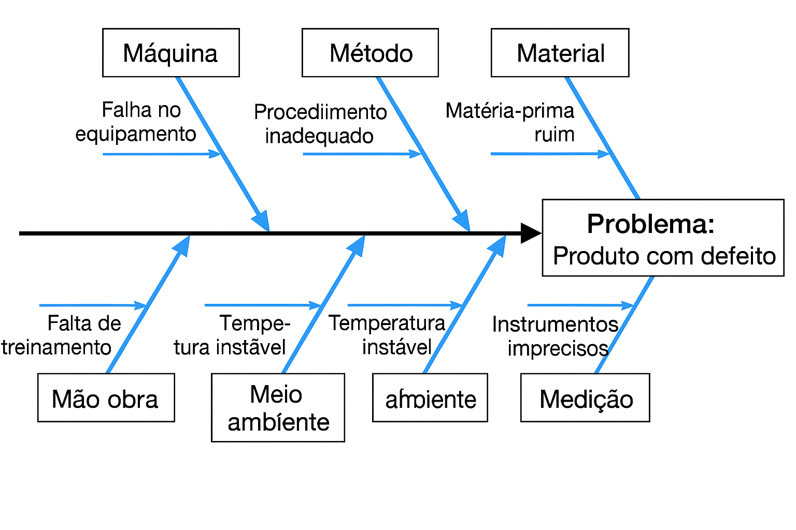

Código
# Pacotes necessários
library(ggplot2)
library(dplyr)
library(reticulate)
use_python("C:/Users/user/anaconda3/python.exe", required = TRUE)Breno Cauã Rodrigues da Silva ![]()
Material de apoio para a disciplina de Controle Estatístico de Qualidade da Falculdade de Estatística (FAEST) da Universidade Federal do Pará (UFPA).
# Pacotes necessários
library(ggplot2)
library(dplyr)
library(reticulate)
use_python("C:/Users/user/anaconda3/python.exe", required = TRUE)# Tratamentos de Dados
import numpy as np
import pandas as pd
# Funções Estatísticas
from scipy import stats
# Visualizações Gráficas
import matplotlib.pyplot as plt
import seaborn as snsAs sete ferramentas da qualidae são técnicas estatísticas simples para resolver problemas na indústria.✅
É uma técnica usada para separar dados em grupos significativos para facilitar a análise.
# Geração de Dados: Exemplo de Dados Estratificados
np.random.seed(11111)
group1_size = 30
group1_x = np.random.normal(loc=10, scale=2.5, size=group1_size)
group1_y = np.random.normal(loc=20, scale=3.5, size=group1_size)
group2_size = 40
group2_x = np.random.normal(loc=20, scale=3.5, size=group2_size)
group2_y = np.random.normal(loc=30, scale=4.5, size=group2_size)
group3_size = 30
group3_x = np.random.normal(loc=30, scale=4.5, size=group3_size)
group3_y = np.random.normal(loc=15, scale=2.5, size=group3_size)
df = pd.DataFrame({
"x": np.concatenate([group1_x, group2_x, group3_x]),
"y": np.concatenate([group1_y, group2_y, group3_y]),
"Grupo": ["Grupo A"] * group1_size + ["Grupo B"] * group2_size + ["Grupo C"] * group3_size
})
# Configurações de Figura
fig, ax = plt.subplots(figsize=(6, 4), dpi=600)
# Scatterplot
sns.scatterplot(x="x", y="y", data=df, hue="Grupo", palette="viridis", s=100, ax=ax)
# Configurações de eixos e títulos
ax.set_xlabel("X", fontsize=12)
ax.set_ylabel("y", fontsize=12)
# Configurações de legenda
ax.legend(loc="upper right", frameon=False)
# Outras configurações
ax.spines["top"].set_visible(False)
ax.spines["right"].set_visible(False)
# Exibição do gráfico
plt.show()# Definir semente
set.seed(11111)
# Grupo A
group1_size <- 30
group1_x <- rnorm(group1_size, mean = 10, sd = 2.5)
group1_y <- rnorm(group1_size, mean = 20, sd = 3.5)
# Grupo B
group2_size <- 40
group2_x <- rnorm(group2_size, mean = 20, sd = 3.5)
group2_y <- rnorm(group2_size, mean = 30, sd = 4.5)
# Grupo C
group3_size <- 30
group3_x <- rnorm(group3_size, mean = 30, sd = 4.5)
group3_y <- rnorm(group3_size, mean = 15, sd = 2.5)
# DataFrame unificado
df <- data.frame(
x = c(group1_x, group2_x, group3_x),
y = c(group1_y, group2_y, group3_y),
Grupo = factor(c(
rep("Grupo A", group1_size),
rep("Grupo B", group2_size),
rep("Grupo C", group3_size)
))
)
# Gráfico com ggplot2
ggplot(df, aes(x = x, y = y, color = Grupo)) +
geom_point(size = 3) +
scale_color_viridis_d() +
labs(x = "X", y = "y", color = "Grupo") +
theme_minimal(base_size = 12) +
theme(
legend.position = "top",
panel.grid.minor = element_blank(),
panel.grid.major = element_line(color = "gray90"),
axis.line = element_line(color = "black"),
axis.ticks = element_line(color = "black"),
panel.border = element_blank()
)“Processo de dividir dados em subgrupos (estratos) com base em características relevantes como turno, máquina, operador, etc.”
df <- data.frame(
Tipo = c("Tempo", "Local", "Pessoa", "Método"),
Exemplo = c("Turno", "Máquina", "Operador", "Matéria-prima")
)
knitr::kable(
df,
escape = FALSE,
align = "c",
booktabs = TRUE
)| Tipo | Exemplo |
|---|---|
| Tempo | Turno |
| Local | Máquina |
| Pessoa | Operador |
| Método | Matéria-prima |
# Exemplo de Estratificação: Defeitos por Turno
np.random.seed(11111)
n = 150
turno = np.random.choice(["Manhã", "Tarde", "Noite"], size=n)
defeitos = np.random.binomial(n=10, p=1/3, size=n)
# Formato Data Frame
df = pd.DataFrame({"Turno": turno, "Defeitos": defeitos})
# Configurações de Figura
fig, ax = plt.subplots(figsize=(6, 4), dpi=600)
# Scatterplot
sns.boxplot(x="Turno", y="Defeitos", data=df, hue="Turno", palette="Set2", ax=ax)
# Configurações de eixos e títulos
ax.set_xlabel(ax.get_xlabel(), fontsize=12)
ax.set_ylabel(ax.get_ylabel(), fontsize=12)
# Outras configurações
ax.spines["top"].set_visible(False)
ax.spines["right"].set_visible(False)
# Exibição do gráfico
plt.show()# Geração de dados
set.seed(11111)
n <- 150
Turno <- sample(c("Manhã", "Tarde", "Noite"), size = n, replace = TRUE)
Defeitos <- rbinom(n, size = 10, prob = 1/3)
# Data frame
df <- data.frame(Turno = Turno, Defeitos = Defeitos)
# Gráfico boxplot
ggplot(df, aes(x = Turno, y = Defeitos, fill = Turno)) +
geom_boxplot() +
scale_fill_brewer(palette = "Set2") +
labs(x = "Turno", y = "Defeitos") +
theme_minimal(base_size = 12) +
theme(
legend.position = "none", # Para imitar o `hue="Turno"` do seaborn
panel.grid.minor = element_blank(),
panel.grid.major = element_line(color = "gray90"),
axis.line = element_line(color = "black"),
axis.ticks = element_line(color = "black"),
panel.border = element_blank()
)São formulários usados para coletar e organizar dados de forma sistemática.
““Documento estruturado para registrar dados observacionais em tempo real.
Usada para:
🤔 Verificação: Distribuição do Processo de Produção
🤔 Verificação: Item Defeituoso
🤔 Verificação: Localização de Defeitos
🤔 Verificação: Causas de um defeito ou falha
🤔 Verificação: Satisfação do Cliente (ex.: questionários de satisfação)

# Dados da Folha de Verificação
defect_types = ["Amassado", "Arranhão", "Bolha", "Mancha"]
defect_counts = [3, 7, 6, 9]
# Configurações de Figura
fig, ax = plt.subplots(figsize=(6, 4), dpi=600)
# Gráfico de Barras
sns.barplot(x=defect_types, y=defect_counts, ax=ax)
# Configurações de eixos e títulos
ax.set_xlabel("Defeito", fontsize=12)
ax.set_ylabel("Quantidade", fontsize=12)
# Outras configurações
ax.spines["top"].set_visible(False)
ax.spines["right"].set_visible(False)
# Exibição do gráfico
plt.show()# Dados da Folha de Verificação
tipos <- c("Amassado", "Arranhão", "Bolha", "Mancha")
quantidades <- c(3, 7, 6, 9)
# Gráfico de Barras
ggplot(data = NULL, aes(x = tipos, y = quantidades)) +
geom_bar(stat = "identity", fill = "blue") +
labs(x = "Defeito", y = "Quantidade") +
theme_classic(base_size = 12)✅ Facilitam a padronização da coleta de dados
✅ Auxiliam na identificação de padrões
✅ São a base para análises gráficas e estatísticas posteriores
Também conhecido como diagrama de causa e efeito ou espinha de peixe.
